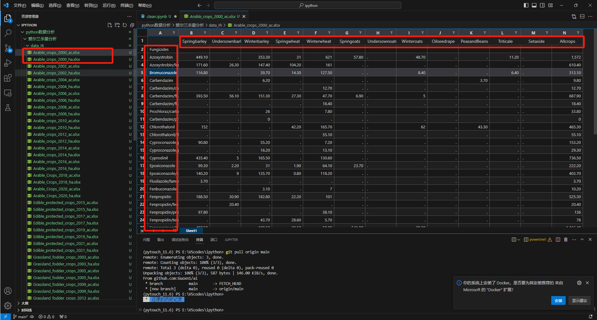
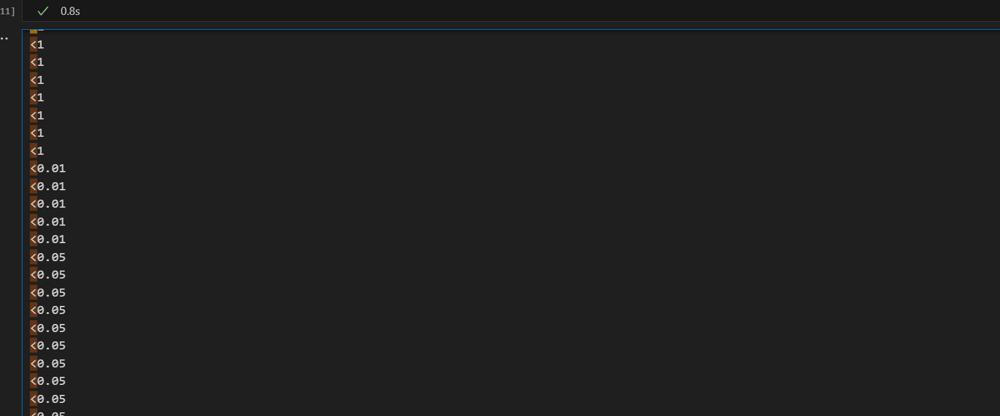
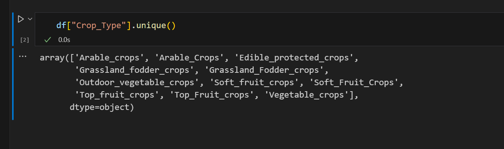
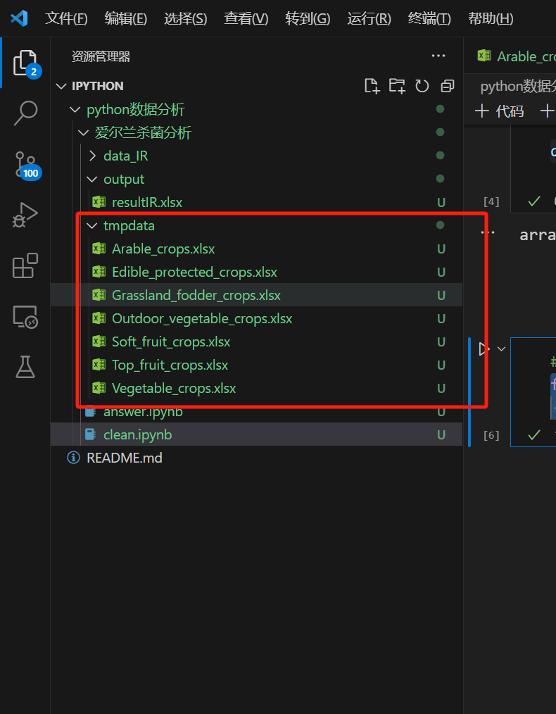
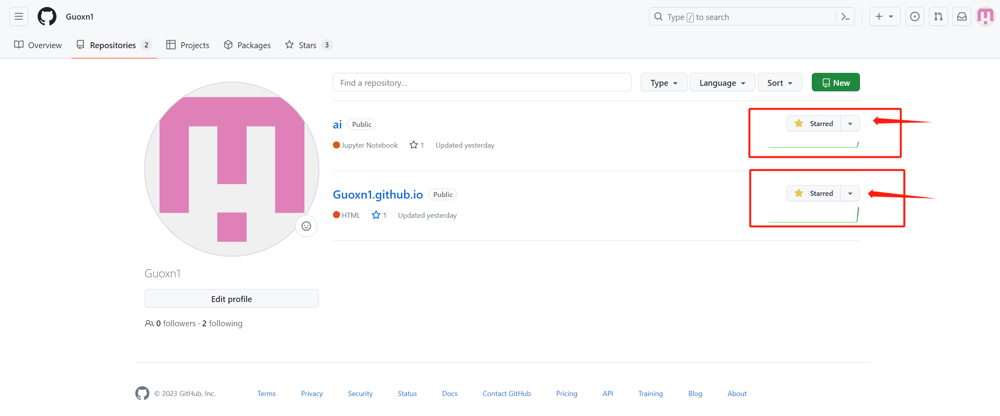

1. 简介
这次主要是对数据进行分析，主要是预处理阶段，会用到pandas,matplotlib等库。
所用的数据集是爱尔兰杀菌剂。出处：https://gitlab.diantouedu.cn/QY/test1。
除了本就有的内容，还有一些自己的思考和代码的更改、补充。
数据集和完整代码我放在这里，在我的仓库中也可以找到。链接：https://github.com/Guoxn1/ai。
这篇博客对代码进行介绍，可运行的完整代码直接去仓库下载，都是有详情注释的。
通过这篇博客，会掌握一些数据的清洗方式，包括对空数据的处理，对列名行名内容的清理整理，缺失值，总基数值的处理，散点图柱状图折线图的画图等。
博客比较长，花了好几天磕磕畔畔弄完的，可以分时食用。
2. 数据
大致了解一下数据。
数据还是有一定规模的，一共90个excel文件，放在了data_IR文件夹下，632KB的实际大小。

原始数据为data_IR下面所有的xlsx文件，其中命名解释一下。以Arable_crops_2000_ac.xlsx为例，和他一起出现的还有Arable_crops_2000_ha.xlsx，其中，数字表示年份，数字左侧表示农作物的种类，比如Arable_crops表示适于耕种的谷物，数字右侧表示杀虫剂的作用类型。ac表示杀虫剂的活性物质的值，ha表示使用杀虫剂的面积。
对于数据的每一列，是农作物的种类，每一行是杀虫剂的种类，里面的数字就是面积或者活性物质的值。
这个数据集就是每年各种农作物使用杀虫剂的情况。
3. 预处理数据
开始分析之前，首先需要对数据进行清洗和预处理。这一步是必要的，因为清洗后的数据会让后续的统计和可视化更准确。
3.1 找到需要清洗的数据
如何判断需要清洗的数据是必要的，比如：将原始数据中的空值替换为0.0，
并将原始数据中的“<1”替换为0.1。这需要明确自己的数据需求。一般通过肉眼观察或者编写程序扫描。比如数据量比较小，就可以通过观察数据，有一些不合理的数据出现，就设法对其进行更改。如果数据量比较大，可以通过编写for循环遍历重要的数据，比如，面积和活性都需要是浮点数，我们遍历所有的列，如果不是浮点数则将其输出，然后在进行观察调研等。
这里我给出一个简单的判断函数：
1 2 3 4 5 6 7 8 9 10 11 12 13 14 15 16 17 18 19 20 21 22 23 24 25 26 import osimport pandas as pddef find_abnormal ():"./data_IR" for filename in os.listdir(folder_path):if filename.endswith("xlsx" ):1 :,1 :]for index, row in df.iterrows():for column in df.columns:try :float (data)except :pass if type (data) != float and data != '.' :print (data)
给出输出结果如下：

可见，有很多不是我们想要的值，之后我们是要替换的，这里可以定义一些规则。
比如，<1替换成0.5，<0.1替换成0.05。
3.2 清理列名
列名和行名通常含有空格，我们将其清理。
如何发现？要么观察要么编写程序检查。
如果发现不了，未来进行数据分析的时候也会发现的。现在假设我们已经发现了。
1 2 3 4 5 6 7 8 9 10 11 12 13 14 15 16 17 18 19 def clean ():"./data_IR" for filename in os.listdir(folder_path):if filename.endswith("xlsx" ):0 ]] = df[df.columns[0 ]].apply(lambda x:x.replace(" " ,"" ) if isinstance (x,str ) else x)lambda x:x.replace(" " ,"" ) if isinstance (x,str ) else x)0 ]].to_frame().join(df.loc[:,~df.columns.str .startswith("Unnamed" )])0 ]:"" },inplace=True )False )
对每个表其中的第一列和第一行进行简单的预处理。
3.2 组合各个表
读取Data1中成对的ha和ac表格数据，组合成下表形式columns=['Year', 'Crop
Type', 'Crop', 'Fungicide', 'Hectares', 'Active Substance']
其中，Year和Crop Type取自表格名(e.g. 1987_Orchards_fruit_ha.xlsx)
Crop列对应ha或ac表格中的行名；Fungicide列对应ha或ac表格中的列名
Hectares对应ha表格中的值；Active
Substance对应ac表格中的值。组合成这个表的意义在于各个核心元素都有了，不用去原先90多个excel表中找数据了。
1 2 3 4 5 6 7 8 9 10 11 12 13 14 15 16 17 18 19 20 21 22 23 24 25 26 27 28 29 30 31 32 33 34 35 36 37 38 39 40 41 42 43 44 45 46 47 48 49 50 51 52 53 54 55 56 57 58 59 60 61 62 63 64 65 66 67 68 69 70 71 72 import osimport pandas as pddef clean ():"./data_IR" for filename in os.listdir(folder_path):if filename.endswith("xlsx" ):0 ]] = df[df.columns[0 ]].apply(lambda x:x.replace(" " ,"" ) if isinstance (x,str ) else x)lambda x:x.replace(" " ,"" ) if isinstance (x,str ) else x)0 ]].to_frame().join(df.loc[:,~df.columns.str .startswith("Unnamed" )])0 ]:"" },inplace=True )False )def trans ():"./data_IR" 'output/resultIR.xlsx' )'Year' , 'Crop_Type' , 'Crop' , 'Fungicide' , 'Hectares' , 'Active_Substance' ])for filename in os.listdir(folder_path):if filename.endswith("xlsx" ):"_" )2 ]'_' .join(parts[0 :-2 ])1 ].split("." )[0 ]0 , index_col=0 )for index in df.index:for column in df.columns:if pd.notna(df.loc[index,column]):str (df.loc[index,column])"." )[0 ].replace("<" ,"0." )try :float (value)except :0.0 if table_type == "ac" :if table_type == "ha" :'Year' , 'Crop_Type' , 'Crop' , 'Fungicide' , 'Active_Substance' ])'Year' , 'Crop_Type' , 'Crop' , 'Fungicide' , 'Hectares' ]) 'inner' , on=['Year' , 'Crop_Type' , 'Crop' , 'Fungicide' ])False )
3.3 综合基数的处理
什么叫综合基数呢，就是all开头的，other等开头的。因为这个往往是一个表在最后会有一个综述。给一个总结。但是我们分析时不需要这个东西，因为我们是好几年连在一块分析的。
1 2 3 4 5 6 7 8 9 10 11 12 13 14 15 16 17 18 19 import pandas as pd"output/resultIR.xlsx" )print (f'删除前的数据数量：{len (df)} ' )"Fungicide" ].str .contains("other Fungicide" ,case =False ),'Fungicide' ] = "Other Fungicide" "Fungicide" ].str .contains("all Fungicide" ,case =False ),'Fungicide' ] = "all Fungicide" 'Fungicide' ].str .contains('otherFungicide' , case =False ), 'Fungicide' ] = 'Other Fungicide' 'Fungicide' ].str .contains('allFungicide' , case =False ), 'Fungicide' ] = 'all Fungicide' "Fungicide" ].str .contains("Other Fungicide|all Fungicide" ,case =False )]'Crop' ].str .contains('Allcrops|Allcrops\\(spha\\)|Allcrops\\(kg\\)|Totalquantity\\(kg\\)|Totalarea\\(spha\\)|Totalquantity|Totalarea' , case =False , regex=True )]print (f'删除后的数据数量：{len (df)} ' )
3.4 处理重复的内容
这里我们只认为农作物有重复的，通过观察得知。
农药也可能，但是这里我们假设只处理农作物的。

明显可以看到有重复的内容，类似于刚才进行更改。
1 2 3 4 5 6 7 8 9 10 "Crop_Type" ].str .contains("Arable" ,case =False ),'Crop_Type' ] = "Arable_crops" "Crop_Type" ].str .contains("Grassland" ,case =False ),'Crop_Type' ] = "Grassland_fodder_crops" "Crop_Type" ].str .contains("Soft" ,case =False ),'Crop_Type' ] = "Soft_fruit_crops" "Crop_Type" ].str .contains("Top" ,case =False ),'Crop_Type' ] = "Top_fruit_crops" 'Crop_Type' ].str .contains('vegetable' , case =False ), 'Crop_Type' ] = 'Outdoor_vegetable_crops' 'Crop_Type' ].unique()"output/resultIR.xlsx" ,index=False )
统一化数据 或者说去除重复但是记录不重复的数据
3.5 分表
进行预处理之后，表内容虽然符合要求了，但是面对各种场景时，涉及到查询任务可能会变慢。所以我们根据特征对表进行分表。最初始的表是根据每年每种农作物和杀虫剂的使用情况来进行分类，太细。我们可以考虑按照农作物来进行分类。
1 2 3 #按照农作物来进行分类for i in df['Crop_Type' ] .unique ():[df["Crop_Type" ] ==i].to_excel (f"tmpdata/{i}.xlsx" ,index=False)

4. 可视化展示
可视化展示可以帮助人们更好地理解数据，以便于后续模型的选择。
这里处理了几个可视化展示的任务及结果。
4.1
散点图不同作物类型报告和年份之间的关系
使用散点图说明不同作物类型报告和年份之间的关系。
这里的意思是，要知道哪一年种了哪些农作物。
我们可以设计横轴是农作物类型。
纵坐标是年份，从2000到2023年。
对于上面的散点，我们设计如果某个类型A的作物在某年a上有出现，散点就是上面的一个坐标（a,A），为其设定一个颜色，比如为蓝色。如果没有则相应的坐标为灰色。
1 2 3 4 5 6 7 8 9 10 11 12 13 14 15 16 17 18 19 20 21 22 23 24 25 26 27 28 29 30 31 32 33 34 35 36 37 38 import pandas as pdimport matplotlib.pyplot as plt"output/resultIR.xlsx" )0 ].drop_duplicates().values1 ].drop_duplicates().valuesfor year in years:for type in Crop_Type:if not df[(df.iloc[:,0 ]==year) & (df.iloc[:,1 ]==type )].empty:type )type ,year) for type in Crop_Type for year in years]for combinaton in all_combinations:if combinaton not in zip (x,y):0 ], combinaton[1 ], color='gray' , alpha=0.5 , s=20 )50 )'Crop Type' )'Year' )range (2000 , 2023 ))25 , ha='right' )'output/Year_Crop Type.png' , dpi=1000 )
4.2
柱状图不同作物类型中,年份和杀菌剂使用的关系
用柱状图表示不同作物类型中，年份和杀菌剂使用的关系
首先每个作物都是一个柱状图，横轴是年份，纵轴是杀菌剂的使用面积或者活性物质。
1 2 3 4 5 6 7 8 9 10 11 12 13 14 15 16 17 18 19 20 21 22 23 24 25 26 27 28 29 30 31 32 33 34 35 36 37 38 39 import osimport pandas as pdimport matplotlib.pyplot as plt3 ,ncols=2 ,figsize=(10 ,10 ))for i,filename in enumerate (os.listdir("tmpdata" )):if filename.endswith("xlsx" ):"tmpdata" ,filename))"Year" ).agg({"Hectares" :"sum" ,"Active_Substance" :"sum" })2 2 "bar" ,ax=ax)'Year' )'Sum of Hectares and Active Substance' )'.' , 1 )[0 ]'output_plots' , 'subplot_IR.png' )1000 )
4.3
柱状图不同作物类型在每年中使用的杀菌剂公顷数
还是不同的作物，还是使用分出来的数据集。
但是细想一下，其实没必要分6个图。因为这里只需要公顷数，而不需要活性，那么数值变量就是一个。
此时横轴可以是时间，纵轴是公顷数，每个柱子用六个柱子组成（也不一定是六个，有的年份不一定都用了六种药）。
上面4.2如果也是只有一个图的话 纵轴表示数值，
那么就要给12个柱子了。所以上面分了6个图。
当然4.2的结果其实包括4.3，只需要把蓝色的柱子单独挑出来就行。
1 2 3 4 5 6 7 8 9 10 11 12 13 14 15 16 17 18 19 20 21 22 23 24 25 26 27 28 29 30 31 32 33 import osimport pandas as pdimport matplotlib.pyplot as plt"output/resultIR.xlsx" )"Year" ,"Crop_Type" ]).agg({'Hectares' : 'sum' })"Year" ,columns="Crop_Type" ,values="Hectares" )0 :2 ] = pivoted_data.iloc[:, 0 :2 ].shift(periods=1 , axis=0 )10 ,6 ))'#1f77b4' , '#ff7f0e' , '#2ca02c' , '#d62728' , '#9467bd' , '#8c564b' , '#e377c2' , '#7f7f7f' , '#bcbd22' , '#17becf' ]'bar' , ax=ax, width=2 , color=colors)'Year' )'Hectares' )'Hectares by Crop Type and Year' )'output_plots' , 'hectares_IR.png' )
4.4
用折线图表示不同作物类型每年使用杀菌剂的密度
密度就是活性除以面积
这里用到了sns库，其实也是画图的
plt也可以画，如果用plt画需要for循环定义好x和y，这里直接用他的df的下标，比较方便吧。
1 2 3 4 5 6 7 8 9 10 11 12 13 14 15 16 17 18 19 20 21 22 23 24 25 26 27 28 import osimport pandas as pdimport seaborn as snsimport matplotlib.pyplot as plt"output/resultIR.xlsx" )"Year" ,"Crop_Type" ]).agg({'Hectares' : 'sum' , 'Active_Substance' : 'sum' })"Active_Substance_per_Hectare" ] = group_data["Active_Substance" ]/group_data["Hectares" ]10 ,6 ))"Year" ,y="Active_Substance_per_Hectare" ,hue="Crop_Type" ,ax=ax)'Year' )'Active Substance per Hectare' )'Active Substance per Hectare by Crop Type and Year' )'output_plots' , 'active_substance_per_hectare_IR.png' )
4.5
用柱状图表示所有杀菌剂中使用周期排名前十的使用情况
使用周期 = last year - first year
可能是画图的原因，运行时间一分多。
1 2 3 4 5 6 7 8 9 10 11 12 13 14 15 16 17 18 19 20 21 22 23 24 25 26 27 28 29 30 31 32 33 34 35 36 37 38 39 40 41 42 43 44 45 import osimport pandas as pdimport seaborn as snsimport matplotlib.pyplot as plt"output/resultIR.xlsx" )"Fungicide" )["Year" ].min ()"Fungicide" )["Year" ].max ()1 )"First_year" ,"Last_year" ]"year_range" ] = result["Last_year" ]- result["First_year" ] "year_range" , inplace=True )"output/year_range.xlsx" )10 )"Fungicide" ].isin(top_10_fungicides)]"Year" ,"Fungicide" ]).agg({"Hectares" : "sum" })True )"Year" , columns="Fungicide" , values="Hectares" )5 , ncols=2 , figsize=(15 , 20 ))0.3 )for i,fungicide in enumerate (top_10_fungicides):2 2 'Year' )'Hectares' )f'{fungicide} Usage Over Years' )'x' )'output_plots' , 'top10.png' )1000 )
4.6
用折线图表示不同作物类型中每年使用的杀菌剂的数量变化
横轴表示年份，纵轴表示杀菌剂数量，各个折线代表每个不同种类的作物。
1 2 3 4 5 6 7 8 9 10 11 12 13 14 15 16 17 18 19 20 21 import osimport pandas as pdimport matplotlib.pyplot as pltfor filename in os.listdir("tmpdata" ):if filename.endswith("xlsx" ):"tmpdata" ,filename))'Year' ] = df['Year' ].astype(int )"Year" )["Fungicide" ].nunique()'line' , label=filename)'Year' )'Number of Unique Fungicides' )'Relationship between Year and Fungicide Data' )'small' , loc='center left' , bbox_to_anchor=(1 , 0.5 ))2000 , 2021 )range (2000 , 2022 , 2 ))'output_plots/relationship_between_year_and_fungicide_data.png' , dpi=1000 , bbox_inches='tight' )
relationship_between_year_and_fungicide_data
还可以自己拓展一些，但是我这里的就先分析和可视化这么多。
其实这些都是python数据分析的准备工作。
未来数据太大可能需要降维，可能需要分类、聚类，应用机器学习算法和深度学习算法等。
这以后再学再写。
如果这篇博客给到您帮助，我希望您能给我的仓库点一个star，这将是我继续创作下去的动力。
我的仓库地址，https://github.com/Guoxn1?tab=repositories
